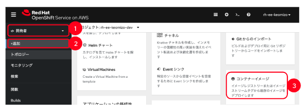

OpenShift Sandbox を使ってみよう ゴール 準備 Red Hat Developerのサイトで、Red Hat Acountが登録してください。 Red Hat Developerのアカウント名を画面上部のテキストフィールドに入力してください。ワークショップのコンテンツにRed Hat Developerのアカウント名が反映されます。 Step1: サンドボックスの開始 https://developers.redhat.com/developer-sandbox にアクセスして「Start your sandbox for free」をクリック 「Log in to your Red Hat account」の画面で、Red Hatアカウントでログイン Red Hat Hybrid Cloud Console画面で、Red Had OpenShiftの「Launch」ボタンをクリック Log in with … の画面で「DevSandbox」をクリック。OpenShiftのポータル画面が表示される 自分の「%USERID%-dev」というネームスペースにアクセス 管理者ビューでは「%USERID%-dev」と「openshift-virtualization-os-images」いうネームスペースが表示されます。開発者ビューでは「%USERID%-dev」だけが表示されます。 sandbox環境では、新しいネームスペースを作成することはできません。 Step2. Album API アプリケーションのデプロイ このステップではコンテナイメージを指定して、バックエンドのアプリケーションをデプロイします。 左Paneのプルダウンメニューで「開発者」を選択 左Paneの「＋追加」をクリック 右Paneをスクロールして「コンテナイメージ」をクリック  イメージセクションの「外部レジストリーからのイメージ名」を選択し、イメージのURL「quay.io/keomizo_redhat/albumapi-javascript」を入力 ※URLのチェックが終わると「検証済み」となる 一般セクションはデフォルトのまま デプロイセクションのリソースタイプのプルダウンメニューで「Deployment」を選択 詳細オプションセクションのターゲットポートが「8080」となっていることを確認 「routeの作成」のチェックボックスをチェック 画面下部の「作成」ボタンをクリック トポロジービューでアプケーションがデプロイされていることを確認（青線ならばOK） Step3. REST API呼び出しの確認 トポロジー表示画面の右PaneでURLを開くボタンをクリック ブラウザにJSONの文字列が表示されることを確認 {"message":"Call the /albums route to retrieve a list of albums"} ブラウザのURLの後ろに /albums を追記して、アルバム一覧のJSONメッセージが返ってくることを確認 [ { "id": 1, "title": "You, Me and an App ID", "artist": "Daprize", "price": 56.99, "image_url": "https://aka.ms/albums-daprlogo" }, { "id": 2, "title": "Seven Revision Army", "artist": "The Blue-Green Stripes", "price": 17.99, "image_url": "https://aka.ms/albums-containerappslogo" }, { "id": 3, "title": "Scale It Up", "artist": "KEDA Club", "price": 39.99, "image_url": "https://aka.ms/albums-kedalogo" }, { "id": 4, "title": "Lost in Translation", "artist": "MegaDNS", "price": 39.99, "image_url": "https://aka.ms/albums-envoylogo" }, { "id": 5, "title": "Lock Down your Love", "artist": "V is for VNET", "price": 39.99, "image_url": "https://aka.ms/albums-vnetlogo" }, { "id": 6, "title": "Sweet Container O' Mine", "artist": "Guns N Probeses", "price": 39.99, "image_url": "https://aka.ms/albums-containerappslogo" } ] Step4. Album UIアプリケーションのデプロイ このステップでは、Album UIアプリケーションのGitリポジトリを指定してアプリケーションをデプロイします。 プルダウンメニューで「開発者」モードを選択 左Paneの「＋追加」をクリック 右Paneをスクロールして「Gitリポジトリ」をクリック Gitリポジトリの情報を入力 Builder Imageとしてnode.jsが選択されていることを確認 アプリケーションプルダウンで「アプリケーションの作成」を選択 アプリケーション名に「albumui」を入力 名前は変更せずそのまま リソースタイプのプルダウンで「Deployment」を選択 詳細オプションセクションのターゲットポートに「8080」となっていることを確認 「routeの作成」のチェックボックスをチェック 画面下部の「作成」ボタンをクリック トポロジービューでアプケーションがデプロイされていることを確認（青線ならばOK） URLを開くボタンをクリック 「Unable to communicate with server」と画面に表示されることを確認 この段階では、Album UIアプリから呼び出すREST APIのURLが設定されていないので、サーバに接続できないというエラーになる。 Step5. Album UIとAlbum APIの連携 このステップではAlbum UIのバックエンドのURLにAlbum APIのURLを設定して、連携できるようにします。 トポロジービューでalbum-scriptをクリック 右Paneに表示されたServiceを確認 名前 albumapi-javascript ポート 8080 トポロジービューでcontainer-albumuiのDeploymentをクリック 右Pane上部のアクションプルダウンメニューで「Deploymentの編集」をクリック デプロイメントの編集画面で「フォームビュー」をクリック 環境変数にバックエンドのURLを指定 名前 API_BASE_URL 値 http://albumapi-javascript:8080 「保存」ボタンをクリック Step6. Album UI と Album APIの連携を確認 URLを開くボタンをクリック アルバムの一覧が画面に表示されることを確認